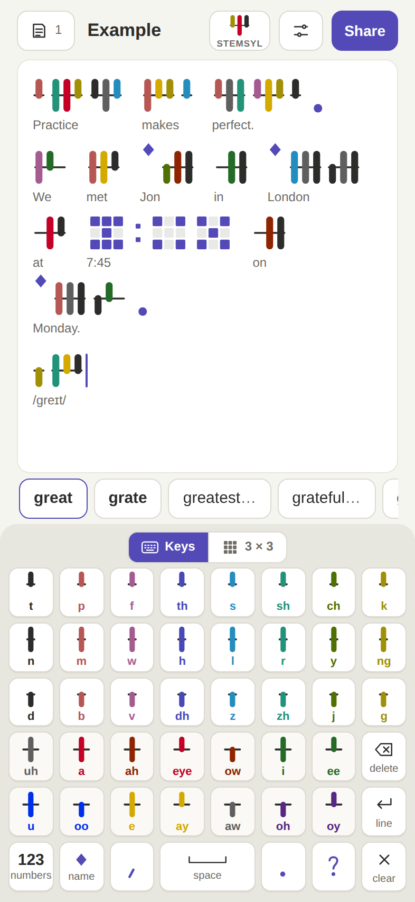
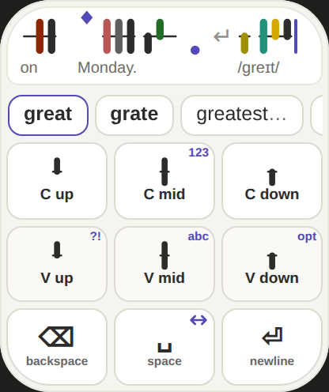
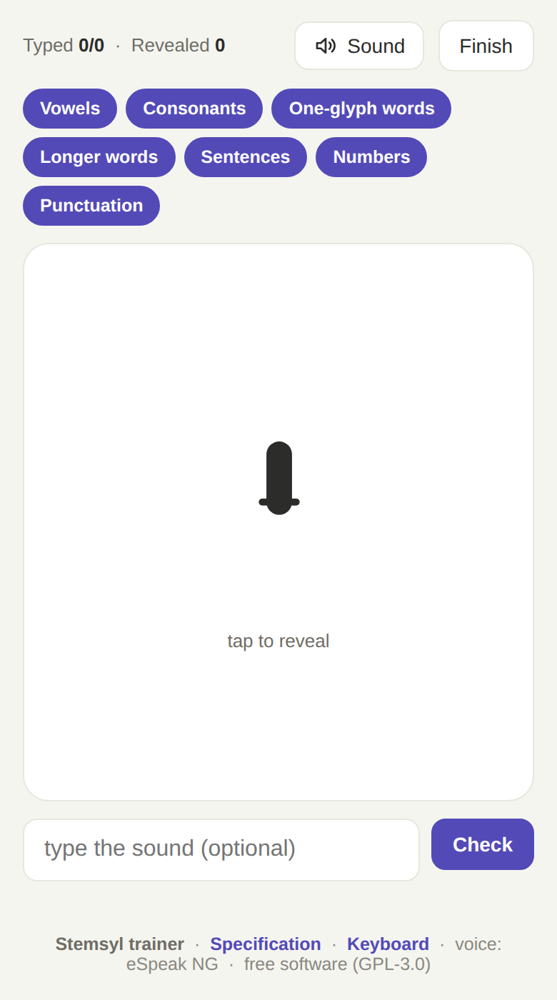
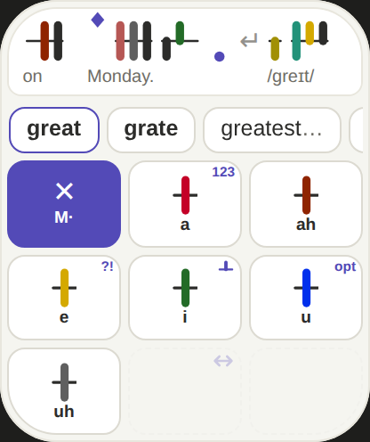
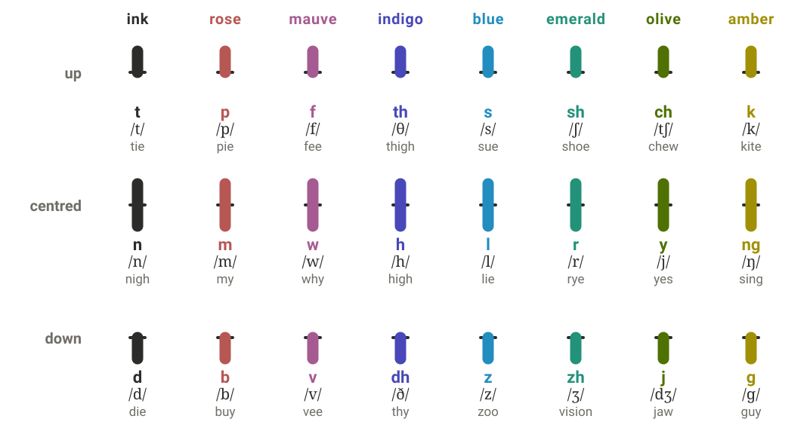
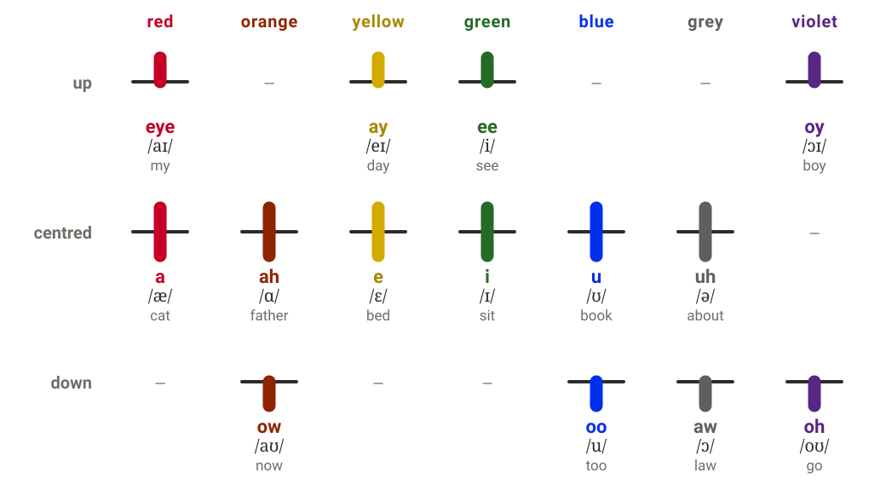

Three free apps
Each app is a single web page. They work offline and keep your notes on your own device.

Keyboard
Write notes in Stemsyl on a phone, tablet or computer. Keys has a key for every sound; 3 × 3 takes two taps a sound. On a computer, type English and it turns into Stemsyl.
Open
Watch keyboard
The 3 × 3 keyboard and a whole editor in 208 × 248 points. Hold the middle key of an edge for numbers, punctuation, the options or the cursor, and hold delete to clear the text.
Open
Trainer
Practise reading: sounds, words, sentences, numerals and punctuation, with every sound spoken.
OpenHow it works
Three ideas make the whole script. The specification has every detail.
A syllable is a stem
Up to three ticks stand on it: the consonant before the vowel, the vowel, and the consonant after it. A leftover consonant gets a stub of its own.
Colour and place name the sound
Consonants come in eight colour families: up is voiceless, centred the sonorant, down voiced. Each vowel colour holds two vowels.
Two taps a sound
On the 3 × 3 keys, tap where the tick goes, then its colour. Words to choose from appear as you go, and the English goes under each word.



Read, download, build on it
Free for everyone, for good. The Stemsyl writing system and its specification are dedicated to the public domain (CC0 1.0). The apps are free software (GPL-3.0-or-later), and the word list is CC BY-SA 4.0.
The specification is published as prior art, so no one can patent these ideas. You may use, teach, adapt and build on them.